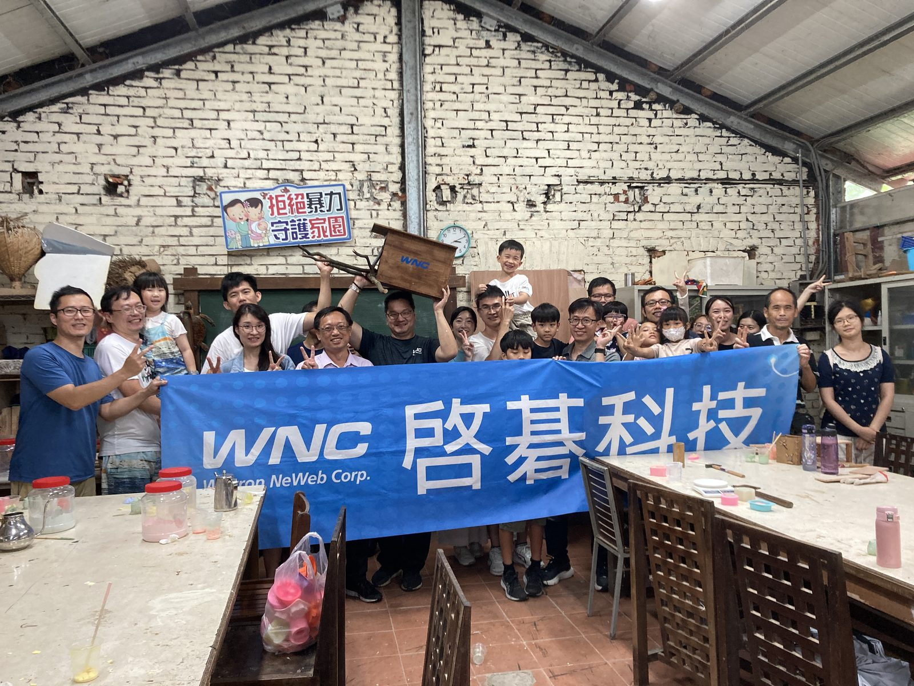
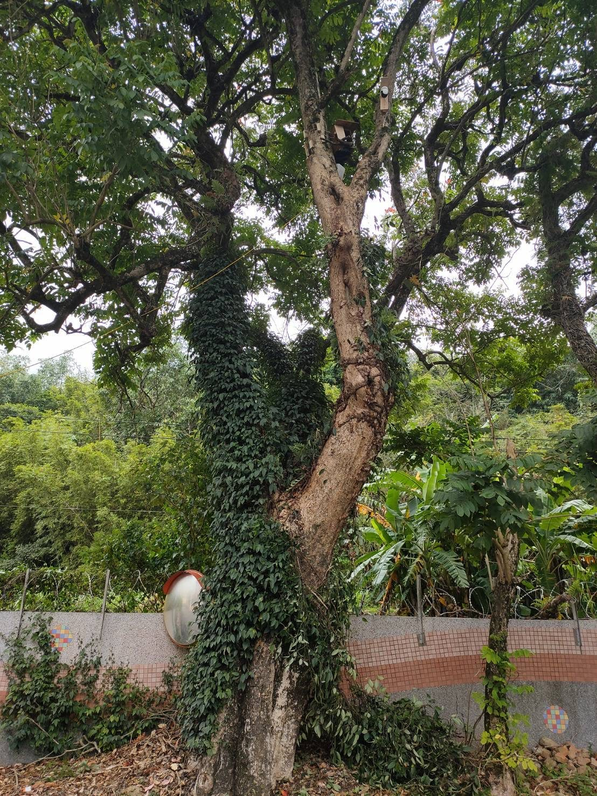
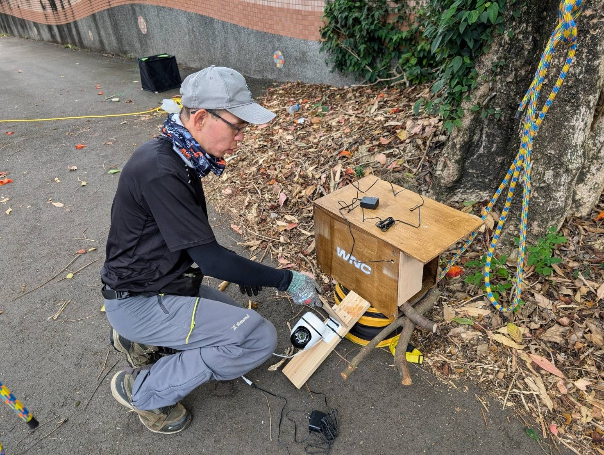
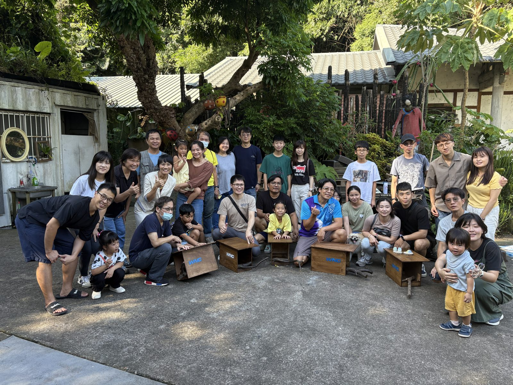
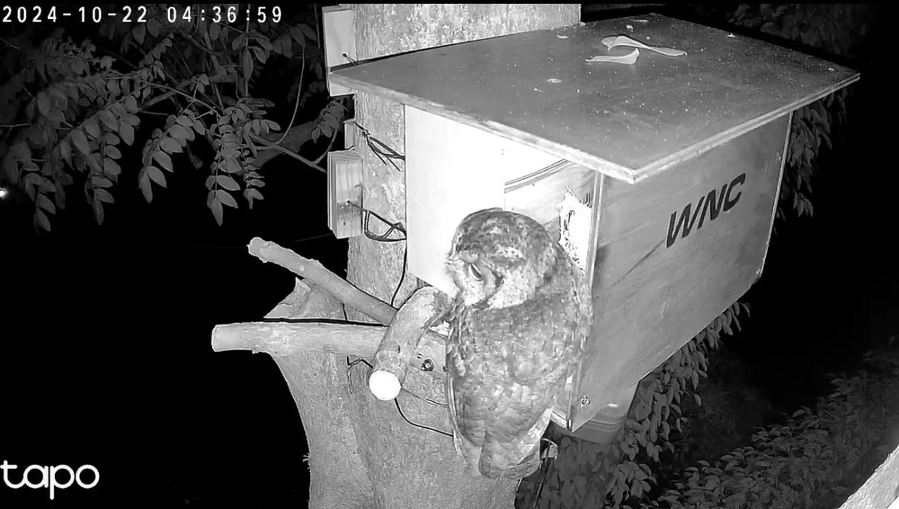
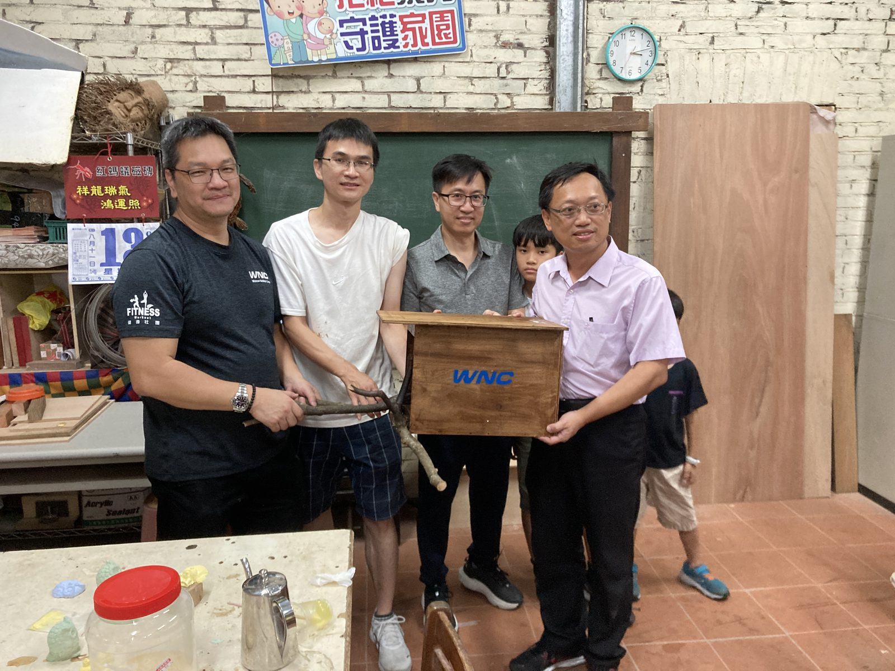
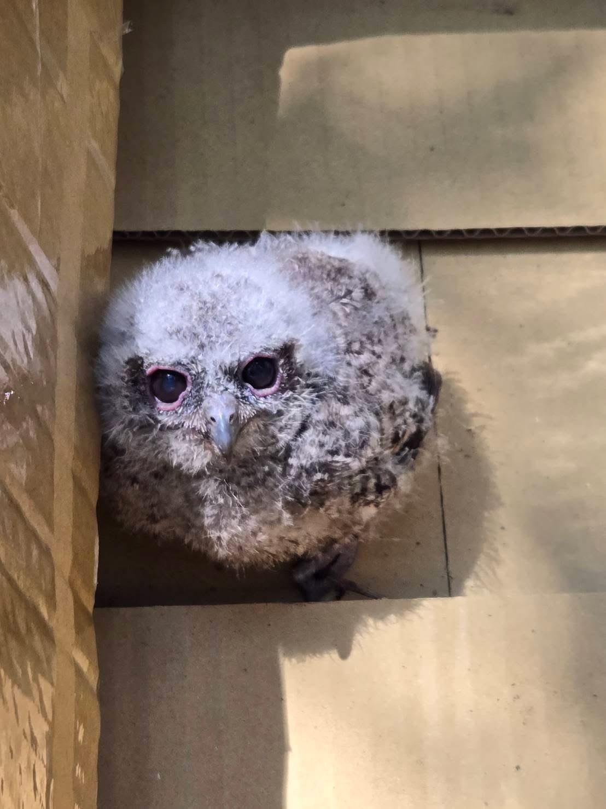
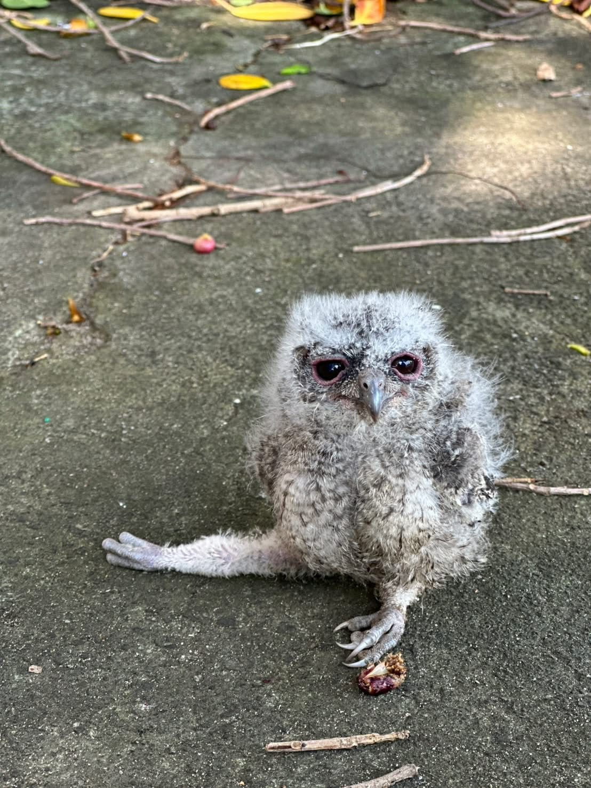

人工巢箱（Nest Box）是一種「生態補償」
領角鴞是淺山地區的指標物種，但因為都市擴張與林地破碎化，大樹洞越來越少。人工巢箱不是干擾，而是一種寶貴的「生態補償」——為找不到樹洞成家的牠們，爭取一條生命的生路。WNC 由同仁親手製作、安裝的巢箱，正是這條生路最實在的一塊磚。
連續兩年透過鏡頭見證成功的繁殖，
將生態知識揉進充滿溫度的故事裡。
都市擴張與林地破碎化，導致天然樹洞大量減少，衝擊了依賴樹洞繁衍的猛禽——領角鴞。
2023 年內部調查顯示，有 57% 的同仁 對環境保護活動充滿熱情。為了將永續關心轉化為實質行動，WNC 自 2024 年起發起「為貓頭鷹打造家園」專案。
我們攜手「竹風樂境」與攀樹師彭康明，透過手作工作坊，親手為貓頭鷹打造安全無虞的替代棲地。

響應工作坊，同仁與眷屬跨世代參與
巢箱掛置於新竹各地校園與生態場域
學校導入巢內 AI / Tapo 智慧網路攝影機監測
成功拍攝到領角鴞或黃嘴角鴞現蹤



2024 年 10 月 22 日的傍晚，新竹橫山大肚國小的操場旁，一個人工巢箱被牢牢固定在火焰木高處。所有人都以為，野鳥要適應人類的造物，少說也得花上幾個月。沒想到，當天半夜，第一隻領角鴞便踏著無聲的翅膀，悄然降落在巢箱前——牠歪著頭，好奇地探索這個新家，就此揭開這場長達兩年的「微光連載」。
選用連續兩年成功育雛的校園，這裡是屬於領角鴞最溫柔的故事開端：公鳥在外捕食送禮，母鳥在巢內孵卵守護，一場堪稱模範的家庭分工，就在鏡頭下一格一格展開。

巢箱掛上當晚，貓頭鷹便前來探訪——大自然給了人類一個不可思議的驚喜。
正式入住：公鳥和母鳥先後進入巢箱，開始觀察到公鳥捕捉食物餵食母鳥，模範家庭的分工就此展開。
生命的精準時鐘：母鳥產下第一顆蛋；之後每隔 2∼3 天再添一顆，共產下 3 顆白蛋，細心塞在肚皮下用體溫守護。
破殼聲傳來：第一隻小貓頭鷹誕生！母鳥優雅地吃掉蛋殼、溫柔地幫雛鳥理毛，其餘兩隻在 1∼2 天內陸續孵化。
領角鴞是淺山地區的指標物種，但因為都市擴張與林地破碎化，大樹洞越來越少。人工巢箱不是干擾，而是一種寶貴的「生態補償」——為找不到樹洞成家的牠們，爭取一條生命的生路。WNC 由同仁親手製作、安裝的巢箱，正是這條生路最實在的一塊磚。
剛孵化，全身覆滿白色絨毛，三隻小寶貝擠在一起，像極了「會動的棉花球」。
毛色從純白轉為深灰，體型快速增大，眼睛也越來越圓、越來越亮。
探出頭、抓樹枝、練展翅，5/12 傍晚 7 時，三隻小貓頭鷹陸續躍向夜空。
隨後的一個月，是生命暴風抽高的高速公路。領角鴞爸爸奮力尋找各種食物餵食家人：
小貓頭鷹開始好奇地探出巢箱，用爪子抓取樹枝，探索巢箱外的世界。
開始練習展翅學飛，三隻小傢伙擠在巢箱門口，興奮地探頭看大肚國小的孩子們在操場上奔跑。
夕陽餘暉剛落，三隻小貓頭鷹拍打著逐漸豐滿的羽翼，陸續躍向夜空，完成了牠們生命中的首次飛行。育雛圓滿成功 🎉
大肚國小的巢箱空了，但新竹的黑夜裡，多了三隻守護森林的夜行俠。
繁殖季期間，母鳥負責孵蛋與守護，公鳥負責獵捕老鼠、蜥蜴與大型昆蟲餵養家庭。
孵化期約需一個月，孵化後約一個月幼鳥即可獨立離巢。
2026 年的春天，新豐國中的巢箱裡同樣誕生了三隻小領角鴞。但大自然從不保證一帆風順。這裡發生了一場關於殘酷、救援，與奇蹟的真實故事。
如果說大肚國小是順遂的教科書，那麼新豐國中，就是一場關於生命殘酷、愛心無遠弗屆，以及科學謎團的震撼教育。

一隻幼雛不幸失蹤；另一隻雛鳥的右腳被發現先天無法彎曲——對極度依賴雙爪抓握獵物、站立攀爬的猛禽而言，這是致命缺陷。
這隻令人揪心的小貓頭鷹，在練習展翅時不慎從高處墜地！校園內頓時警鈴大作，一場與時間賽跑的跨國救援悄然展開。
學校總務處與熱心教師緊急上網尋求野生動物救助單位；愛心無遠弗屆——校內教師遠在美國哈佛的親友，竟跨海線上幫忙聯繫台灣的救傷管道！
這隻小寶貝被順利通報，後送至六福村救護站進行醫療照護。人類的即時介入，為牠爭取到了活下去、甚至未來重返藍天的機會。


新豐國中
校方通報
哈佛親友
跨海線上協助
台灣救傷單位
緊急聯繫
六福村救護站
醫療照護
愛心跨越太平洋，科技縮短了救援的距離。
野外育雛成功率因這場意外降至 33%（三隻中僅存一隻健在野外）。但這個數字背後，是人類以最快速度回應生命呼喚的行動——另外那隻，正在救護站等待重返藍天的那一天。
台灣領角鴞屬保育類野生動物，絕對不得私自飼養。若在校園或路邊發現落巢幼鳥，正確步驟是：① 拍照記錄 → ② 保持距離觀察是否有親鳥 → ③ 撥打 1999 或通報專業野生動物救傷單位（如本案後送六福村救護站）。私自飼養野生動物可能觸犯《野生動物保育法》，輕則罰款，重則負刑事責任。發現受傷的生命，最好的愛護方式是交給專業的手。
大考驗過後，新豐國中的樹梢上出現了溫馨的一幕：4 月 16 日，母鳥帶著野外僅存的最後一隻小貓頭鷹，在綠葉間輕盈跳動，展現出生命的強大韌性。
母鳥帶著野外僅存的最後一隻小貓頭鷹，在樹梢綠葉間輕盈跳動，生命展現出驚人的韌性。
監測人員點開巢箱畫面，不敢置信地揉了揉眼睛——巢箱裡，居然躺著一顆全新、剛產下的蛋！這在台灣領角鴞的繁殖紀錄中，是極為罕見的案例。
母鳥
帶大寶
巢中
出現新蛋
從 4/16 幼鳥離巢至 4/28 母鳥產下新蛋，中間僅間隔 12 天，正好符合猛禽重新排卵所需的 10∼21 天生理循環。初步推測，由於新豐校園食物來源極度穩定充足，母鳥在體力恢復迅速的情況下，極可能主動發動了「第二次繁殖（Double Brooding）」，以最大化年度繁殖潛力。
因為領角鴞外觀極難辨識，目前無法百分之百確認這是否為同一隻母鳥。透過 WNC 未來更新的「巢外攝影機」，你也可以一起加入觀察！
聽叫聲：觀察母鳥是否有特定的鳴叫頻率，不同個體的叫聲細節有微妙差異。
看分工：母鳥已開始孵第二窩，4/16 離巢的大寶還在附近——餵食大寶的重責大任全數落在公鳥肩上！大寶幾度現蹤回巢箱找鳥媽媽，是非常有趣的家庭動態現象。
持續觀測：WNC 巢外攝影機即將上線，屆時更多行為細節將被記錄下來，等待公民科學家一起解謎。
在墜地後的第 12 天，攝影機畫面裡再次出現了白色的蛋。大自然從不輕言放棄——母鴞用行動告訴我們什麼叫做韌性。
這個計畫的價值遠超過製作巢箱本身。我們透過跨界合作，將科技、教育與生物多樣性相結合。
如竹東大同國小將巢箱監測融入「臺美生態學校」課程，帶領學生觀察校園樹木健康與野生動物互動。
延伸樹木健康觀察（如防範水泥鋪面阻礙樹根呼吸），培養市民與學子的「護樹人」視角。
成果收錄於 WNC 永續報告書與 TNFD 報告，讓生物多樣性保育真正落實為企業文化。
智慧巢箱與雲端公民科學觀察地圖
企業與校園跨域生態創新競賽
社區保育日與友善棲地綠化行動